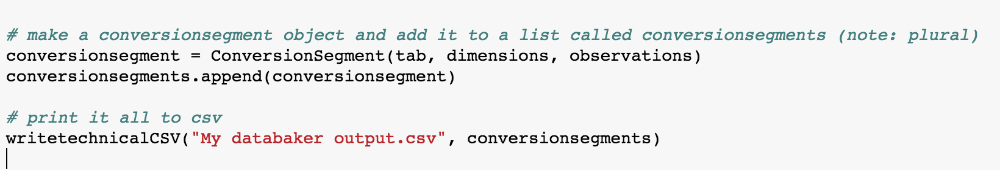

Output to CSV¶
Conversion Segments¶
A “conversion segment” is just a catch-all term to describe a single extraction of data from a table. So the product of running through your seg of instruction once against a single table.
In most scenarios a “conversion segment” and the output from processing a single tab will be the same, but be aware there are scenarios where you may want to process a single tab more than once, hence the abstraction.
You create a conversion segment with the following function:
*conversionsegment = ConversionSegment(tab, dimensions, observations)*
tab, dimensions and observations are all variables from earlier in the script.
The ConversionSegment() function takes them and flattens the data, this is effectively where all the prior instructions are put into play. It’s effectively boiler plate code so you’ll never have to change it, save when bringing pandas directly into your workflow (see below).
A single conversionsegment (or a list of them) can then be fed to the CSV writer.
Post-processing and Write to CSV¶
Databaker deliberately includes a step where your file has been flattened but before it has been written to csv. This is to allow us to leverage the python pandas library for dealing with edge cases and/or particularly bad source data that may need some finishing touches.
Outlining all you can do with pandas is far beyond the scope of these documents, but the following shows how you can incorporate it into your databaker workflow.
Not using pandas:
Using pandas:

That’s literally it. the writetechnicalCSV (see below) function can work with either pandas dataframes or pure databaker input, there’s no need to “convert back to databaker” or somesuch.